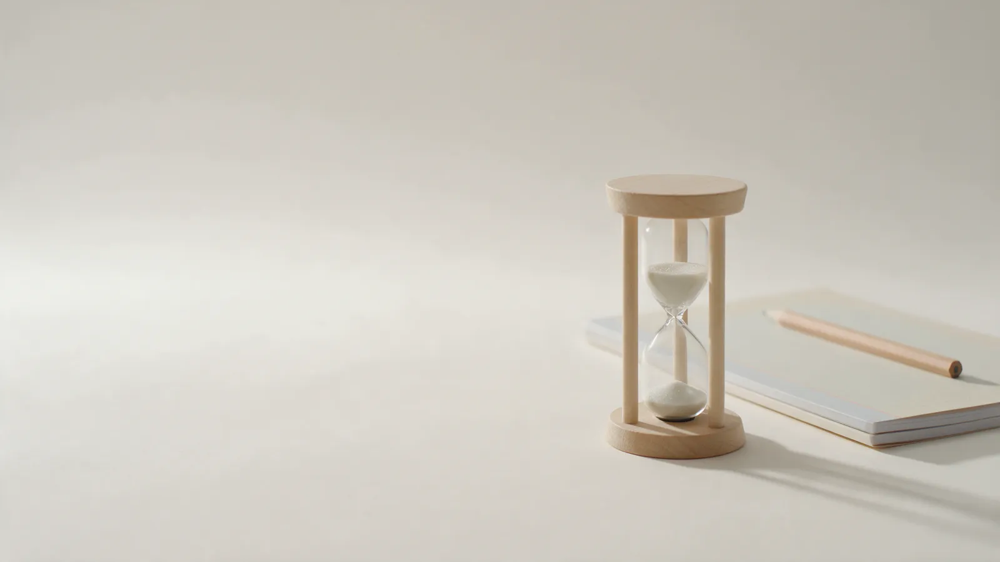

Онлайн и очно · 5–11 классы
Репетитор по русскому языку и литературе для 5–11 классов
Готовлю к ОГЭ и ЕГЭ, помогаю подтянуть школьную программу. Пишем без ошибок и без страха перед экзаменом.
Пробное занятие – 30 минут, бесплатно.
Для кого мои занятия
Занимаюсь со школьниками 5–11 классов и со взрослыми. На пробном занятии определим, с чего начать, и составим план.
Так я проверяю письменные работыМы повторяли правило в течении в течение года
- 9 и 11 классыПодготовка к ОГЭ и ЕГЭ. Разбираем задания первой части, пишем сочинение по критериям экзамена, изложение и сочинение-рассуждение.
- 5–8 классыШкольная программа: орфография, пунктуация, литература. Помогаю догнать класс и полюбить чтение.
- Взрослые и поступающиеРазберём слабые места в правописании и подготовим к вступительным испытаниям.
План на полгода, а не просто занятия по расписанию
После пробного занятия вы получаете тетрадь: четыре этапа, что делаем на занятиях и что дома. Вот она, страница за страницей.
- Месяц 1Диагностика и база
- Месяцы 2–3Главные темы
- Месяцы 4–5Практика и скорость
- Месяц 6Пробный экзамен и разбор
После каждой встречи – письменный разбор: что получилось и что повторить. Родитель видит план целиком.
Как проходит занятие
Занятие длится 60 минут и идёт по одной схеме: ученик знает, что будет, а родитель – что было.
Записаться на пробное
0–5 минут
Разбор домашнего задания
Смотрим, что получилось. Ошибки разбираем сразу, а не откладываем на потом.
Ученик: видит, что домашнее задание проверяют, и выполняет его.
5–30 минут
Одна новая тема
Правило, три примера, проверочный вопрос. Одна тема за занятие, не пять сразу.
Ученик: уходит с одним правилом, которое понял до конца.
30–50 минут
Практика
Ученик делает сам: диктант, упражнение или задание из экзамена. Подсказываю, а не решаю за него.
Ученик: пишет больше, чем слушает.
50–60 минут
Итог и домашнее задание
Что получилось и что повторить. После встречи присылаю короткий письменный разбор и домашнее задание на следующую неделю.
Родитель: знает, что было на занятии и что задано, без лишних расспросов.
Сколько стоят занятия
Цена известна заранее. Абонемент на 8 занятий выгоднее, чем оплачивать каждое занятие отдельно.
- Онлайн или очно, время выбираем под ваше расписание
- Оплата после занятия, переводом
- Перенос за сутки – занятие не сгорает
Пробное занятие
30 минутбесплатноЗнакомимся и пишем небольшую диагностическую работу.
Занятие онлайн
60 минут1 500 ₽Занятие по видеосвязи, один или два раза в неделю.
Занятие очно
60 минут1 800 ₽Занятие лично, один или два раза в неделю.
Абонемент на 8 занятий онлайн
8 × 60 минут11 200 ₽Выходит 1 400 ₽ за занятие вместо 1 500 ₽.
Преподаёт 14 лет
Ученик должен понимать, почему слово пишется именно так
Правила на живых примерах. Мы не зубрим списки, а разбираем правила на текстах, которые читают в школе.
14 лет преподавания, 9 из них – подготовка выпускников к экзаменам.
Один ученик или небольшая группа из двух-трёх человек. После каждой встречи присылаю короткий письменный разбор.
Дипломы и сертификаты
Серии и номера на сканах закрыты, видны только ФИО, учебное заведение и квалификация. Нажмите на документ, чтобы рассмотреть его крупнее.
Начните с пробного занятия
Напишите, в каком классе учится ученик и что нужно подтянуть. Предложим время на ближайшие дни, проведём бесплатное пробное занятие и составим план на полгода.